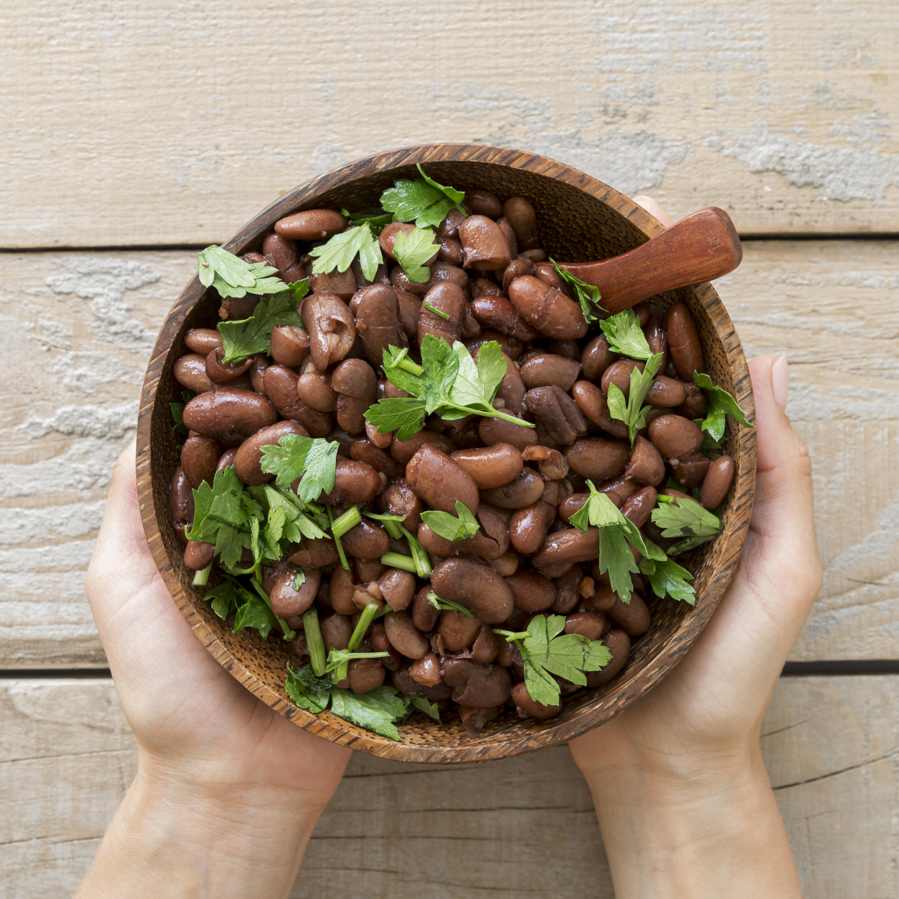

Back to Home
Pinto Beans With Mexican-Style Seasonings

Description
These pinto beans are cooked with a blend of Mexican spices, creating a
flavorful and hearty dish. Perfect as a side or a main course, they can be
served with rice, tortillas, or your favorite protein.
Ingredients
- 2 cups dried pinto beans
- 1 onion, chopped
- 2 cloves garlic, minced
- 1 teaspoon cumin
- 1 teaspoon chili powder
- Salt and pepper to taste
- 4 cups vegetable broth
Instructions
- Rinse and soak the pinto beans overnight.
- In a large pot, sauté the onion and garlic until translucent.
- Add the soaked beans, spices, and vegetable broth.
-
Bring to a boil, then reduce heat and simmer for 1.5 to 2 hours, or
until beans are tender.
- Season with salt and pepper before serving.